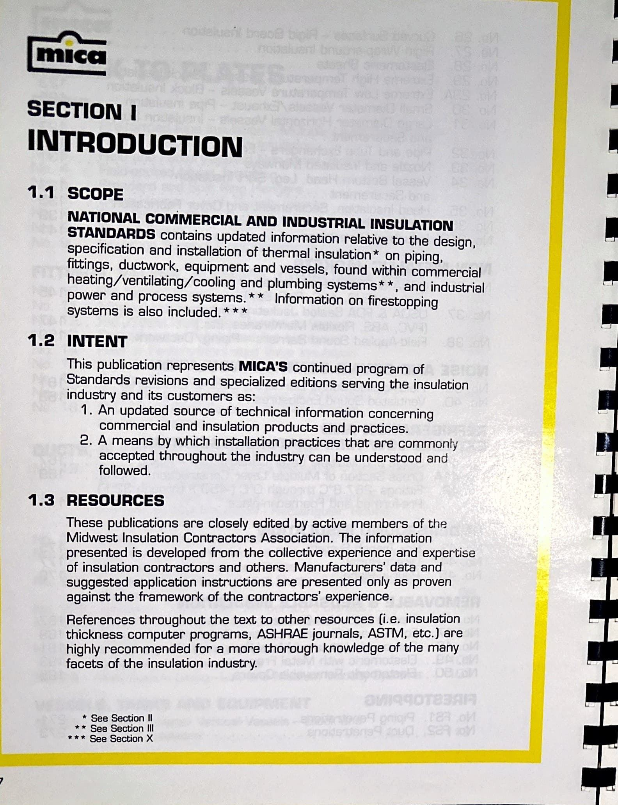
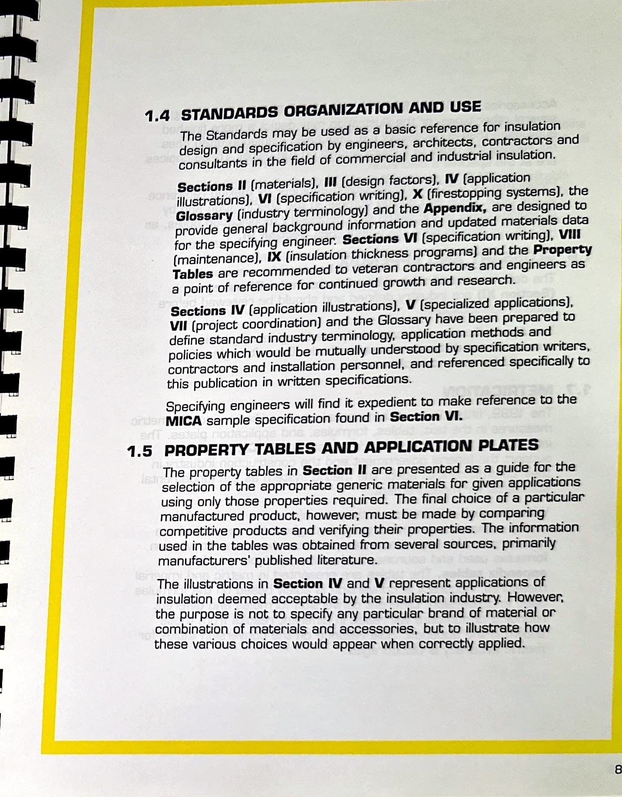
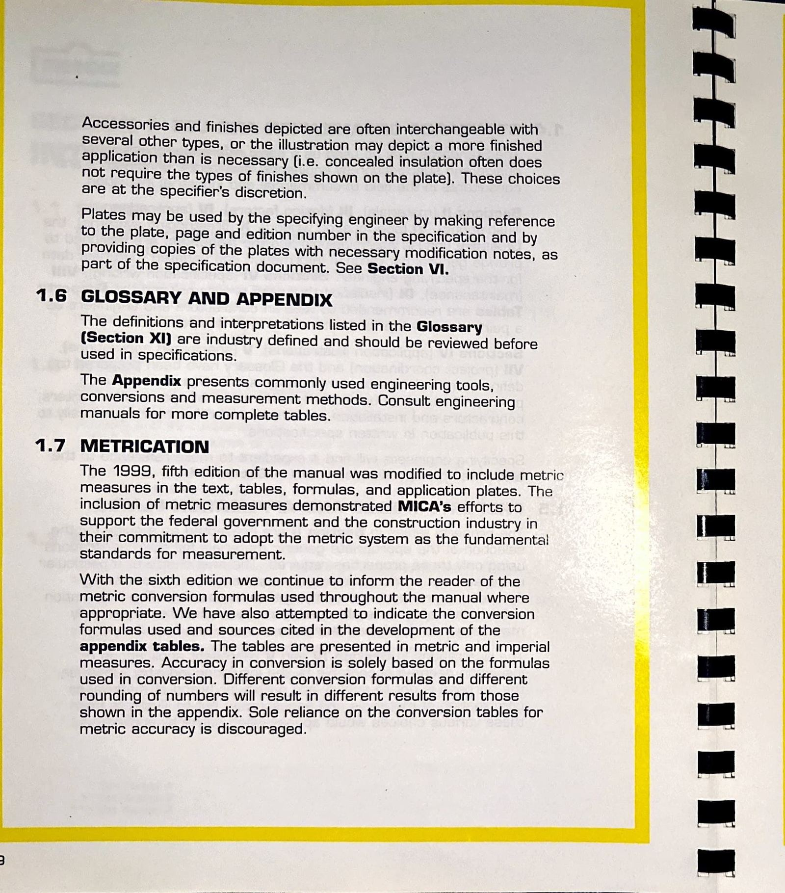
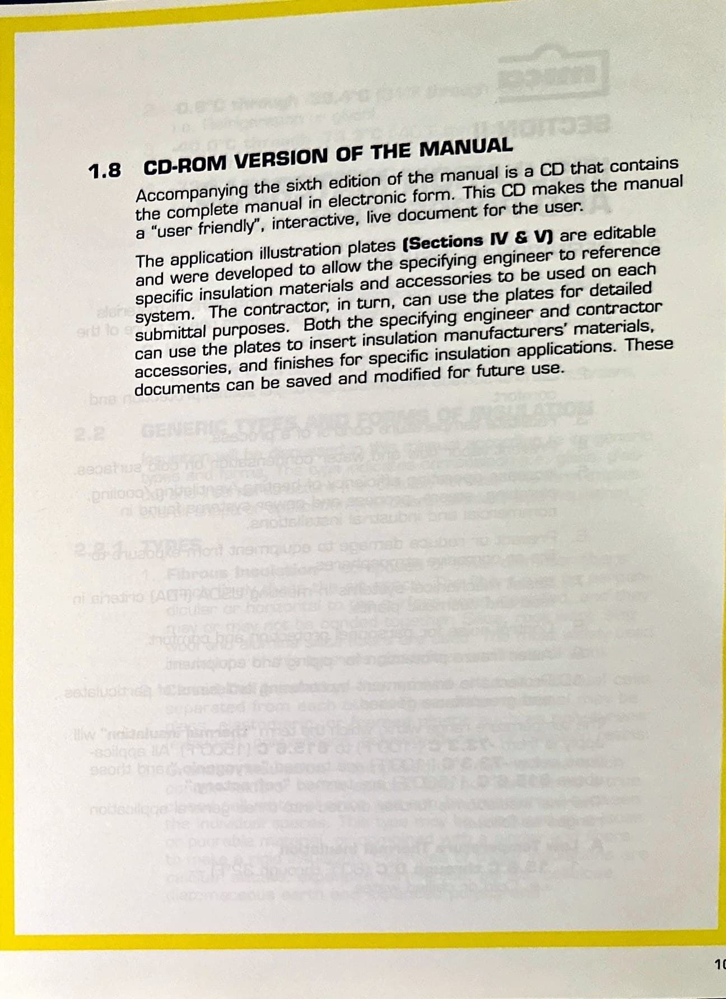

Section I - Introduction
Page 13

muca SECTION I INTRODUCTION 1.1 SCOPE NATIONAL COMMERCIAL AND INDUSTRIAL INSULATION STANDARDS contains updated information relative to the design, specification and installation of thermal insulation* on piping, fittings, ductwork, equipment and vessels, found within commercial heating/ ventilating/cooling and plumbing systems**, and industrial power and process systems.
** Information on firestopping systems is also included.
*** 1.2 INTENT This publication represents MICA'S continued program of Standards revisions and specialized editions serving the insulation industry and its customers as: 1.
An updated source of technical information concerning commercial and insulation products and practices.
2.
A means by which installation practices that are commonly accepted throughout the industry can be understood and followed.
1.3 RESOURCES These publications are closely edited by active members of the Midwest Insulation Contractors Association.
The information presented is developed from the collective experience and expertise of insulation contractors and others.
Manufacturers' data and suggested application instructions are presented only as proven against the framework of the contractors' experience.
References throughout the text to other resources (i.e.
insulation thickness computer programs, ASHRAE journals, ASTM, etc.) are highly recommended for a more thorough knowledge of the many facets of the insulation industry.
* See Section II ** See Section Ill * See Section X
Page 14

1.4 STANDARDS ORGANIZATION AND USE The Standards may be used as a basic reference for insulation design and specification by engineers, architects, contractors and consultants in the field of commercial and industrial insulation.
Sections II (materials), III (design factors), IV (application illustrations), VI (specification writing), X (firestopping systems), the Glossary (industry terminology) and the Appendix, are designed to provide general background information and updated materials data for the specifying engineer.
Sections VI (specification writing), VIII (maintenance), IX finsulation thickness programs) and the Property Tables are recommended to veteran contractors and engineers as a point of reference for continued growth and research.
Sections IV (application illustrations), V (specialized applications), VII (project coordination) and the Glossary have been prepared to define standard industry terminology, application methods and policies which would be mutually understood by specification writers, contractors and installation personnel, and referenced specifically to this publication in written specifications.
Specifying engineers will find it expedient to make reference to the MICA sample specification found in Section VI.
1.5 PROPERTY TABLES AND APPLICATION PLATES The property tables in Section II are presented as a guide for the selection of the appropriate generic materials for given applications using only those properties required.
The final choice of a particular manufactured product, however, must be made by comparing competitive products and verifying their properties.
The information used in the tables was obtained from several sources, primarily manufacturers' published literature.
The illustrations in Section IV and V represent applications of insulation deemed acceptable by the insulation industry.
However, the purpose is not to specify any particular brand of material or combination of materials and accessories, but to illustrate how these various choices would appear when correctly applied.
Page 15

Accessories and finishes depicted are often interchangeable with several other types, or the illustration may depict a more finished application than is necessary (i.e.
concealed insulation often does not require the types of finishes shown on the plate).
These choices are at the specifier's discretion.
Plates may be used by the specifying engineer by making reference to the plate.
page and edition number in the specification and by providing copies of the plates with necessary modification notes, as part of the specification document.
See Section VI.
1.6 GLOSSARY AND APPENDIX The definitions and interpretations listed in the Glossary (Section X') are industry defined and should be reviewed before used in specifications.
The Appendix presents commonly used engineering tools, conversions and measurement methods.
Consult engineering manuals for more complete tables.
1.7 METRICATION The 1999, fifth edition of the manual was modified to include metric measures in the text, tables, formulas, and application plates.
The inclusion of metric measures demonstrated MICA's efforts to support the federal government and the construction industry in their commitment to adopt the metric system as the fundamental standards for measurement.
With the sixth edition we continue to inform the reader of the metric conversion formulas used throughout the manual where appropriate.
We have also attempted to indicate the conversion formulas used and sources cited in the development of the appendix tables.
The tables are presented in metric and imperial measures.
Accuracy in conversion is solely based on the formulas used in conversion.
Different conversion formulas and different rounding of numbers will result in different results from those shown in the appendix.
Sole reliance on the conversion tables for metric accuracy is discouraged.
Page 16

1.8 CD-ROM VERSION OF THE MANUAL Accompanying the sixth edition of the manual is a CD that contains the complete manual in electronic form.
This CD makes the manual a "user friendly", interactive, live document for the user.
The application illustration plates (Sections IV & V) are editable and were developed to allow the specifying engineer to reference specific insulation materials and accessories to be used on each system.
The contractor, in turn, can use the plates for detailed submittal purposes.
Both the speciMng engineer and contractor can use the plates to insert insulation manufacturers' materials, accessories, and finishes for specific insulation applications.
These documents can be saved and modified for future use.
1